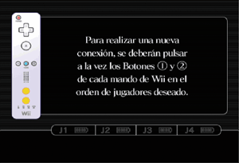

|
3
|
Preparación del mando
|

|


Nota: Si el cierre de tu correa tiene un seguro, bájalo hasta que oigas un clic. Así evitarás que se suelte la correa.
Este procedimiento te permitirá establecer la comunicación entre el mando y la consola. El mando de Wii incluido con esta consola Wii ya ha sido sincronizado con la misma. Existen dos métodos para sincronizar un mando con la consola: Modo normal - El modo normal de sincronización se utiliza para conectar mandos adicionales a la consola o para volver a sincronizar el mando incluido con la consola Wii. Una vez sincronizado, el mando permanecerá conectado a la consola a menos que sobrescribas dicho ajuste al sincronizar el mando con otra consola diferente. Modo único - Este modo te permitirá usar el mando de Wii temporalmente con la consola de un amigo, así como que tus amigos puedan usar sus mandos con tu consola. No sobrescribirá el ajuste del modo normal guardado en el mando de Wii. En este modo, el mando solo se comunicará con la nueva consola mientras esté encendida. Al apagarla, el mando dejará de estar sincronizado con la consola. Nota: Tan solo un mando de Wii sincronizado en el modo normal puede encender o apagar la consola. Sincronización en modo normal Nota: Asegúrate de que el mando de Wii tiene pilas.

Se debe seguir este procedimiento con cada mando de Wii adicional que conectes a la consola.
Nota: El número de indicadores que parpadeen mostrará el nivel de carga de las pilas del mando de Wii que se esté sincronizando.
Sincronización en modo único Nota: Este modo desactiva de forma temporal el ajuste de sincronización del modo normal para todos los mandos de Wii hasta que se apaga la consola Wii. Cuando se vuelva a encender la consola, se restaurará la configuración del modo normal.

IMPORTANTE: Si el mando de Wii pierde la sincronización con la consola y no puedes volver a sincronizarlo, revisa el apartado “Solución de problemas” del manual de instalación de la consola.
Ten presentes las siguientes recomendaciones cuando uses el accesorio Wii Balance Board™. De lo contrario, podrías provocar lesiones a otras personas, o causar daños a la propia Wii Balance Board o a otros objetos cercanos.
Sigue los pasos descritos a continuación para configurar el accesorio Wii Balance Board:
ADVERTENCIA:
|
 en el mando de Wii que esté sincronizado con la consola.
en el mando de Wii que esté sincronizado con la consola.

 y
y  del mando de Wii que quieras sincronizar con la consola.
del mando de Wii que quieras sincronizar con la consola.


|

|

|